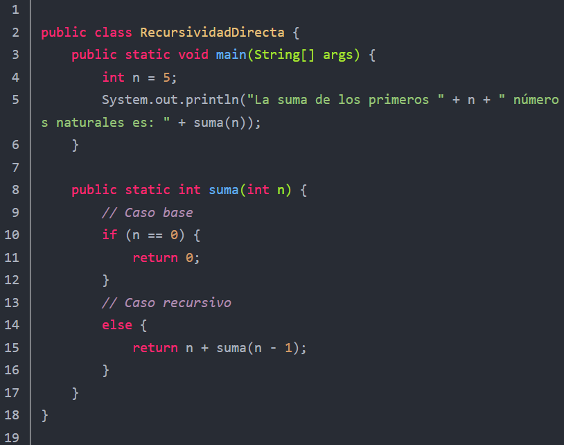
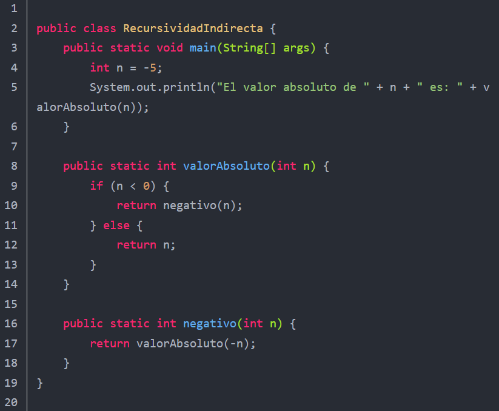
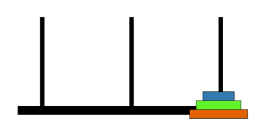
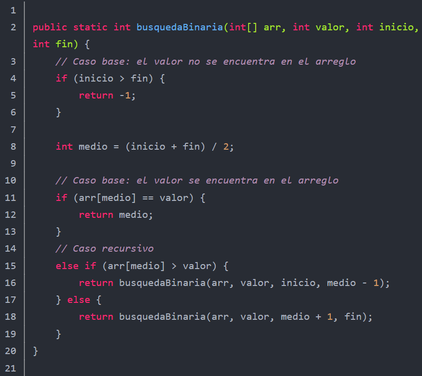

Definición de Recursividad
La recursividad es una técnica donde un método se llama a sí mismo para resolver un problema dividiéndolo en subproblemas más pequeños. Facilita soluciones claras y concisas, aunque requiere cuidado para evitar errores como llamadas infinitas o desbordamiento de memoria [1].
Directa: el programa o subprograma se llama directamente a sí mismo. Representa un programa y en alguna parte y en alguna parte de el aparece una llamada a sí mismo [2].
Ocurre cuando una función se llama a sí misma directamente para resolver un problema.Ejemplo práctico: Calcular la suma de los primeros n números naturales.
Indirecta: El subprograma llama a otro subprograma, y éste, en algún momento, llama nuevamente al primero [2].
Ocurre cuando una función llama a otra función distinta, que a su vez llama a la función original, creando un ciclo de llamadas entre las funciones.Ejemplo práctico: Calcular el valor absoluto de un número utilizando recursividad indirecta.
Procedimientos Recursivos y Aplicaciones
Un procedimiento recursivo es aquel que se llama a sí mismo para resolver un problema, generalmente dividiéndolo en subproblemas más simples hasta alcanzar un caso base.
- Debe tener un caso base que detenga la recursión.
- Puede ser directa o indirecta.
- Puede ser lineal, múltiple o final.
- Permite reemplazar bucles en ciertos problemas complejos de manera más clara.
Aplicaciones comunes:
La recursividad se utiliza en muchos campos de la programación y algoritmos por su capacidad de simplificar problemas complejos. Algunos ejemplos comunes:
- Listas enlazadas: recorrer o buscar nodos
- Árboles y grafos: recorrido en preorden, inorden, posorden.
- Pilas y colas: procesos recursivos de inserción o elimicación.
Características de la Recursividad
- Toda función recursiva debe tener un caso base que detenga la recursión y evite llamadas infinitas. Ejemplo: if (n == 0) return 1; en factorial.
- Divide un problema en subproblemas más pequeños.
- Utiliza la pila de llamadas para almacenar estados intermedios.
- Permite soluciones elegantes y compactas.
- Puede ser menos eficiente que soluciones iterativas debido al uso de memoria.
- Permite expresar soluciones claras y concisas frente a problemas que serían complicados.
- Cada llamda recusiva debe simplicar el calculo de alguna manera [3].
Complejidad Computacional en los algoritmos recursivos
La complejidad computacional de los algoritmos recursivos es un aspecto crucial que debe ser considerado al diseñar y analizar algoritmos para garantizar su eficiencia y efectividad en la resolución de problemas.
El propósito principal de la complejidad computacional es el análisis del comportamiento de los algoritmos, buscando medir o estimar los recursos, principalmente el tiempo de ejecución, que consumirán para resolver problemas [6].
La complejidad se mide contando operaciones significativas como las aritméticas y de comparación, y se representa mediante una función matemática que caracteriza el rendimiento del algoritmo, permitiendo predecir su tiempo de ejecución para distintas entradas sin necesidad de ejecutarlo.
La complejidad de algoritmos recursivos depende del número de llamadas recursivas y del trabajo en cada llamada. Ejemplos:
- Factorial: O(n)
- Fibonacci (versión simple): O(2ⁿ), muy ineficiente.
- Fibonacci con memoización: O(n)
- Torres de Hanói: O(2ⁿ), exponencial.
Ejemplos de Algoritmos Recursivos
Factorial
El factorial de un número entero positivo n, representado como n!, es el producto de todos los números enteros positivos desde 1 hasta n.
La función recursiva calcula el factorial de un número entero no negativo [1].
Formula: n! = n * (n-1)!, con el caso base 0! = 1.

Fibonacci
La función recursiva calcula el n-ésimo término de la serie de Fibonacci.
F(n) = F(n-1) + F(n-2), con F(0)=0 y F(1)=1.
Es la secuencia de enteros:
0, 1, 1, 2, 3, 5, 8, 13, 21, 34
Cada elemnto de esta secuencia es la suma de los dos elemntos precedentes
(ej. 0+1=1, 1+1=2, 1+2=3, 2+3=5,... )
Si definimos fib (0)=0, fib (1)=1, y asi sucesivamente, podemos definir la secuencia de Fibonacci por medio de la siguiente definición recursiva [4].

Ejemplo en código:
Torres de Hanói
El problema de la Torre de Hanoi consiste en mover n discos de tamaño diferente desde una barra de origen a una barra de destino, utilizando una barra auxiliar, siguiendo las siguientes reglas:
Problema clásico de mover discos entre torres siguiendo reglas estrictas.
Fractales
La búsqueda binaria es un algoritmo eficiente para buscar un elemento específico en un arreglo ordenado.
Estructuras autosimilares generadas recursivamente, como el conjunto de Mandelbrot.

Conclusión
La recursividad constituye un principio esencial en la programación y en las matemáticas, pues permite resolver problemas complejos mediante la repetición de pasos más simples. Ejemplos como el factorial, la sucesión de Fibonacci, las Torres de Hanói y los fractales reflejan la versatilidad de esta técnica, capaz de ir desde aplicaciones formativas hasta representaciones visuales de gran complejidad. Sus características de simplicidad, elegancia y autorreferencia la convierten en una herramienta valiosa, aunque su uso también implica considerar la complejidad computacional que puede generar. En síntesis, la recursividad muestra cómo un mismo enfoque puede aplicarse a diversos contextos, brindando soluciones claras y creativas.